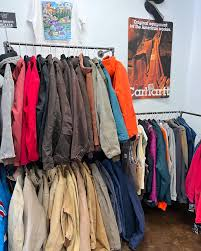
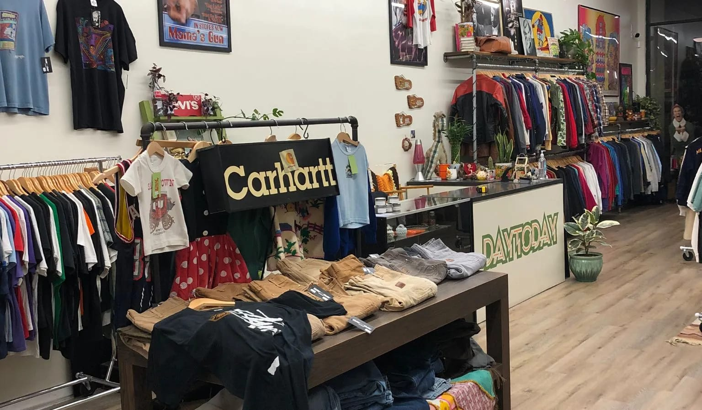
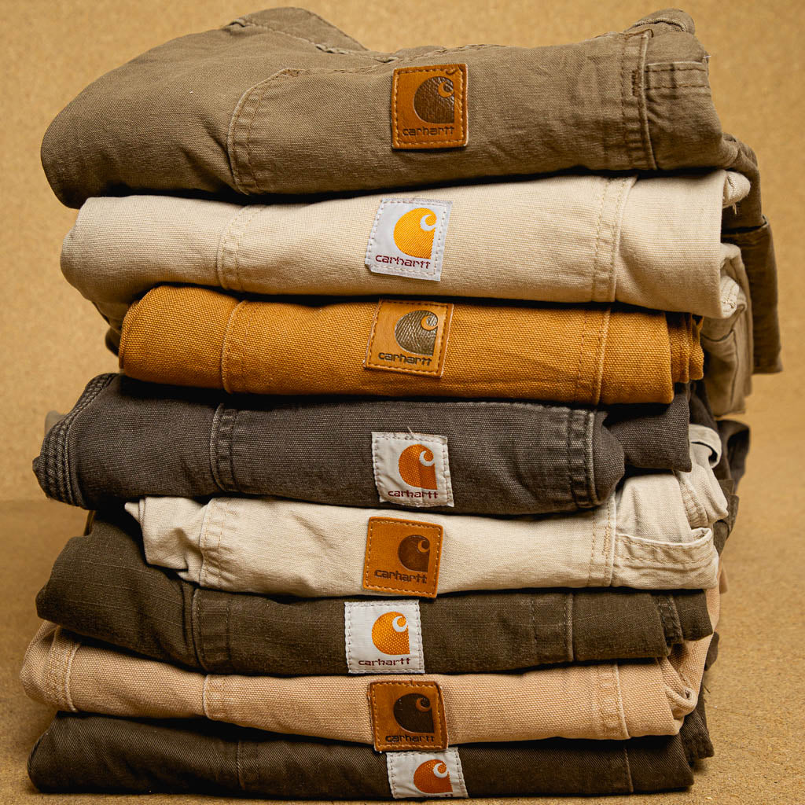
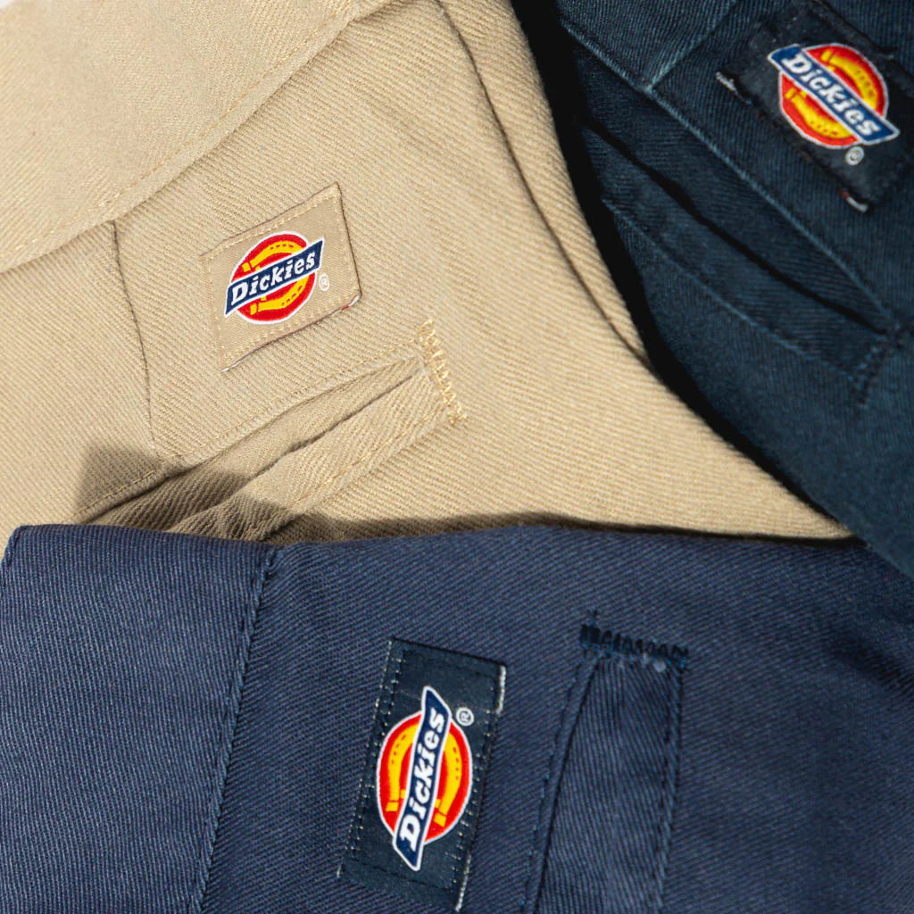
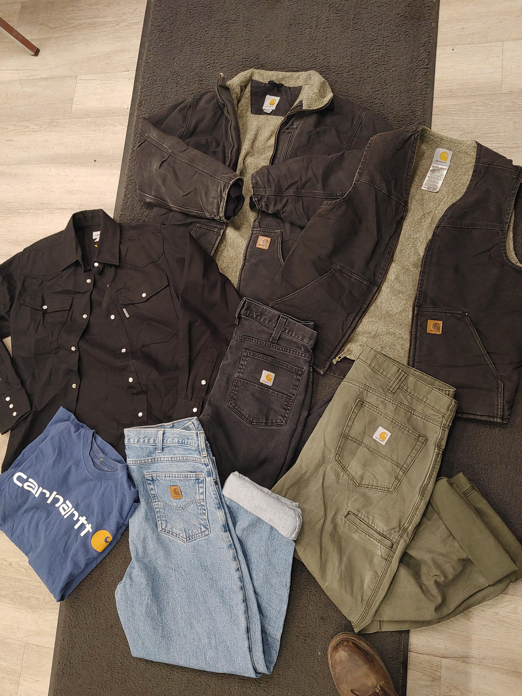
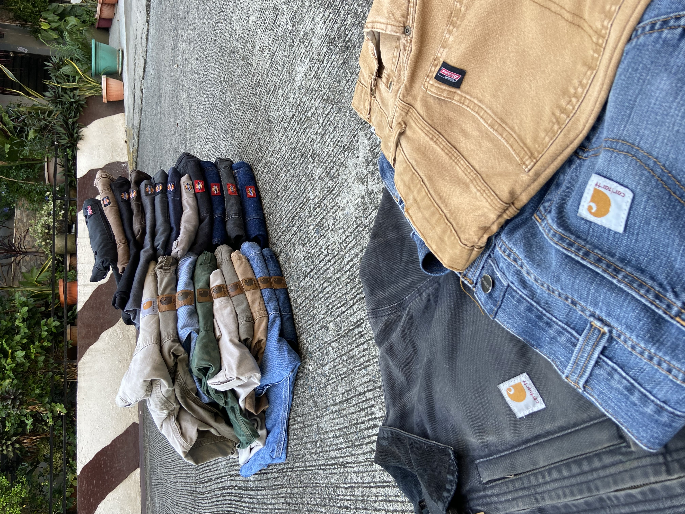
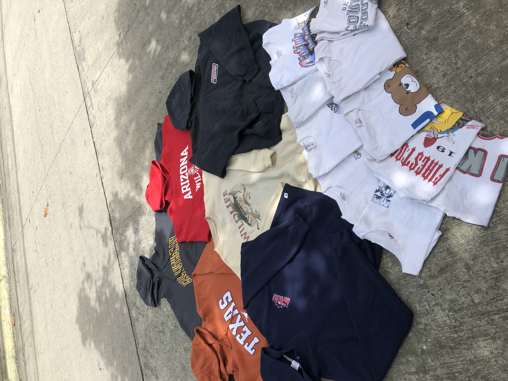
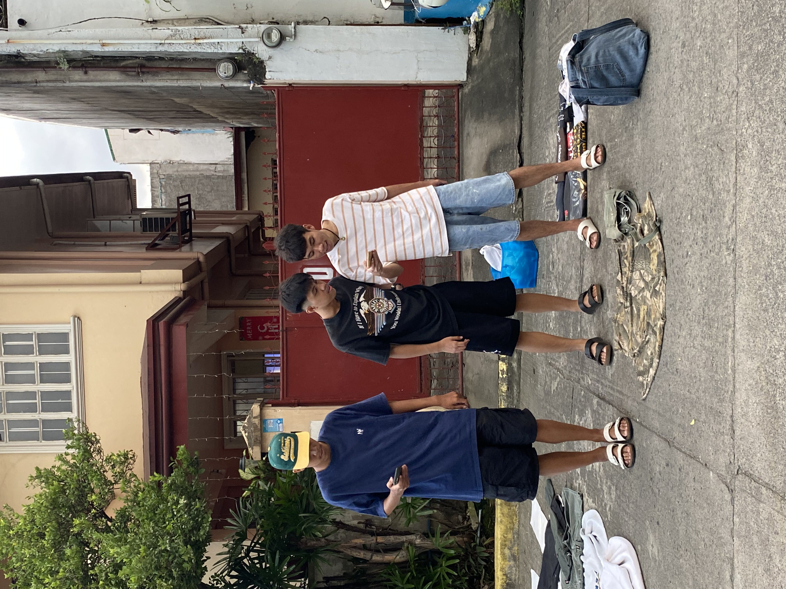
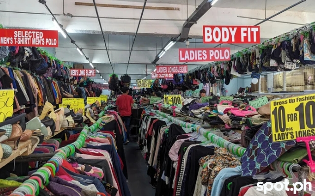

Discover unique treasures at Thrift2Nite,
your go-to thrift store for quality, affordable,
and sustainable finds. From vintage fashion and
clothing brand to one of a kind accessories, we bring
you the joy of giving pre-loved items a second chance.
Shop with us and embrace style, savings, and sustainability!
Let me know if you'd like to tweak the tone, focus, or add specific details about your offerings!


Thrift Store Description
Products
"Our thrift store offers a wide range of pre-loved treasures,
including vintage clothing like carhartt, chrome hearts,
dickies, and more! Whether you’re hunting for timeless
fashion pieces, unique collectibles, or affordable everyday
essentials, you’ll find something special here. Each item in
our collection is carefully curated to bring you quality,
character, and charm at unbeatable prices. Come explore,
save, and make sustainability stylish!"


Available Products
"Gear up with thrifted Carhartts—rugged, reliable, and full of character!
Whether it’s classic jackets, durable overalls, or heavy-duty work pants,
our collection of pre-loved Carhartts combines iconic style with unbeatable
toughness. Perfectly worn-in and ready for anything, these pieces deliver the
quality you expect at a fraction of the price. Shop sustainably and make these
timeless essentials your own!"

Carhartt
"Step into the past with our curated collection of vintage clothing!
From timeless classics to bold statement pieces, our pre-loved
treasures bring the charm of bygone eras to your modern wardrobe.
Whether you're hunting for retro dresses, iconic denim, or chic
accessories, each piece tells a story and adds a unique flair to
your style. Explore sustainable fashion with character and elevate
your look with vintage vibes!"



Vintage Thrifted Clothes
Promos
"Save big at our thrift store with deals like 10 30% off multiple items,
₱300 Fill-a-Bag Frenzies, and up to 40% off seasonal styles. Don’t miss
Treasure Hunt Tuesdays with 50% off select pieces or Flash Sale Fridays
with rotating discounts. Shop new arrivals with 15% off, earn rewards with
our loyalty program, and enjoy 10% off on Sustainable Sundays when you donate
gently used items. Find unbeatable value and unique treasures all week long!"

SALE
"Don’t miss out on unbeatable deals on Carhartt!
Shop our collection of pre-loved Carhartt jackets,
overalls, and workwear at incredible prices. Built
tough and perfectly broken-in, these iconic pieces
are ready for work or play while keeping your style
rugged and timeless. Stock up now and save big while
supplies last!"
Exclusive Carhartt Sale
Contact Us For More Inquiries
"For any inquiries or to check on the latest deals,
feel free to reach us at our thrift store or call or text
us 09630466874. Our friendly team is here to help you
with product details, store hours, and anything else
with product. Call or text us today we’re just a phone call away!"
Call Now Shop Later